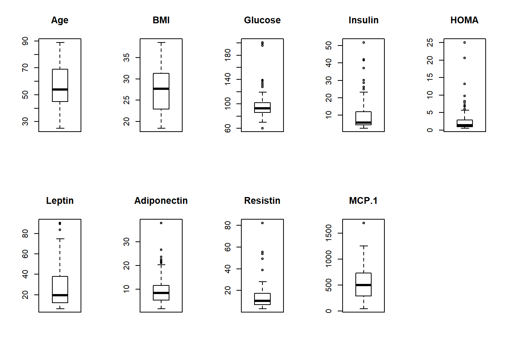
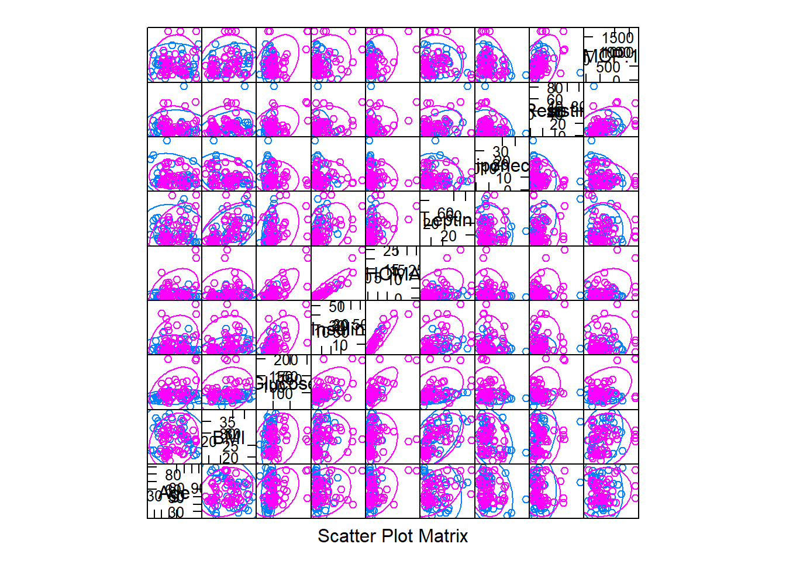
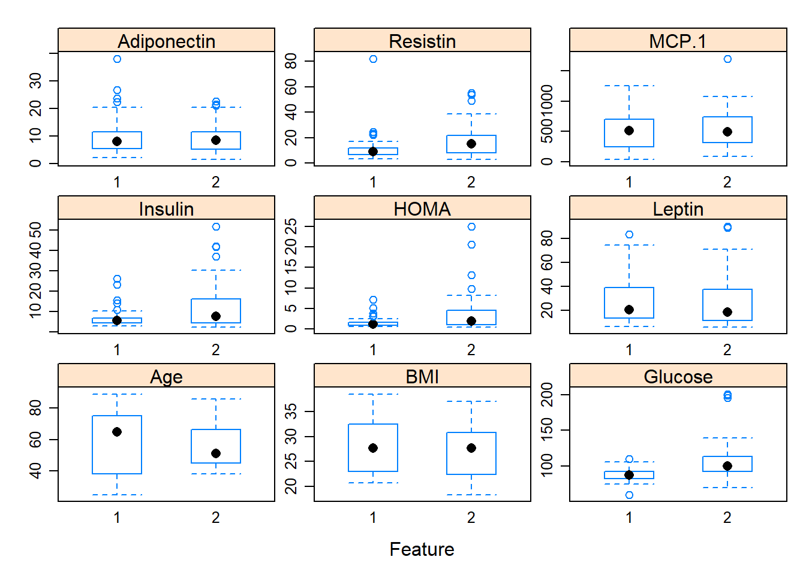
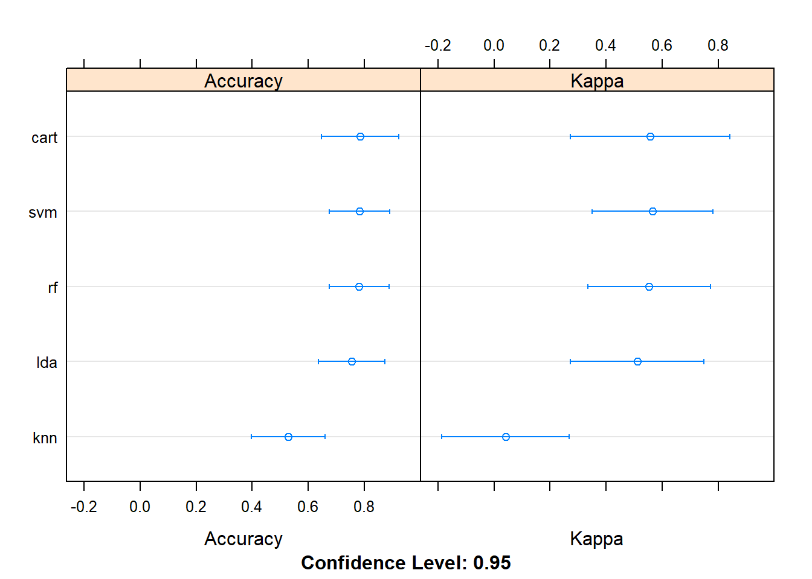

4.1 Classification
2020-02-04
This exercise was done as described by: https://machinelearningmastery.com/machine-learning-in-r-step-by-step/
but using a data set from: https://archive.ics.uci.edu/ml/datasets/Breast+Cancer+Coimbra#
Read the data
Factor variable Classification
NOTE: in order to use the caret packages in all its’ capabilities you must do install.packages("caret", dependencies = T)
create a validation dataset and use the remaing for training
library(caret)
# create a list of 80% of the rows in the original dataset we can use for training
validation_index <- createDataPartition(dataset$Classification, p=0.80, list=FALSE)
# select 20% of the data for validation
validation <- dataset[-validation_index,]
# use the remaining 80% of data to training and testing the models
dataset <- dataset[validation_index,]dimensions of the new dataset
## [1] 94 10list types for each attribute
## Age BMI Glucose Insulin HOMA
## "integer" "numeric" "integer" "numeric" "numeric"
## Leptin Adiponectin Resistin MCP.1 Classification
## "numeric" "numeric" "numeric" "numeric" "factor"take a peek at the first 5 rows of the data
| Age | BMI | Glucose | Insulin | HOMA | Leptin | Adiponectin | Resistin | MCP.1 | Classification | |
|---|---|---|---|---|---|---|---|---|---|---|
| 2 | 83 | 20.69049 | 92 | 3.115 | 0.7068973 | 8.8438 | 5.429285 | 4.06405 | 468.786 | 1 |
| 3 | 82 | 23.12467 | 91 | 4.498 | 1.0096511 | 17.9393 | 22.432040 | 9.27715 | 554.697 | 1 |
| 4 | 68 | 21.36752 | 77 | 3.226 | 0.6127249 | 9.8827 | 7.169560 | 12.76600 | 928.220 | 1 |
| 5 | 86 | 21.11111 | 92 | 3.549 | 0.8053864 | 6.6994 | 4.819240 | 10.57635 | 773.920 | 1 |
| 6 | 49 | 22.85446 | 92 | 3.226 | 0.7320869 | 6.8317 | 13.679750 | 10.31760 | 530.410 | 1 |
| 7 | 89 | 22.70000 | 77 | 4.690 | 0.8907873 | 6.9640 | 5.589865 | 12.93610 | 1256.083 | 1 |
list the levels for the class
## [1] "1" "2"summarize the class distribution
percentage <- prop.table(table(dataset$Classification)) * 100
cbind(freq=table(dataset$Classification), percentage=percentage)| freq | percentage |
|---|---|
| 42 | 44.68085 |
| 52 | 55.31915 |
summarize attribute distributions
| Age | BMI | Glucose | Insulin | HOMA | Leptin | Adiponectin | Resistin | MCP.1 | Classification | |
|---|---|---|---|---|---|---|---|---|---|---|
| Min. :25.00 | Min. :18.37 | Min. : 60.00 | Min. : 2.432 | Min. : 0.5079 | Min. : 6.334 | Min. : 1.656 | Min. : 3.210 | Min. : 45.84 | 1:42 | |
| 1st Qu.:45.00 | 1st Qu.:22.86 | 1st Qu.: 86.00 | 1st Qu.: 4.387 | 1st Qu.: 0.9314 | 1st Qu.:12.279 | 1st Qu.: 5.375 | 1st Qu.: 6.963 | 1st Qu.: 295.14 | 2:52 | |
| Median :54.00 | Median :27.69 | Median : 92.50 | Median : 5.796 | Median : 1.3744 | Median :19.587 | Median : 8.294 | Median :10.636 | Median : 501.24 | NA | |
| Mean :56.87 | Mean :27.59 | Mean : 98.49 | Mean : 9.821 | Mean : 2.7169 | Mean :26.618 | Mean : 9.829 | Mean :14.840 | Mean : 557.96 | NA | |
| 3rd Qu.:69.00 | 3rd Qu.:31.25 | 3rd Qu.:102.00 | 3rd Qu.:11.670 | 3rd Qu.: 2.7982 | 3rd Qu.:37.688 | 3rd Qu.:11.493 | 3rd Qu.:17.510 | 3rd Qu.: 728.66 | NA | |
| Max. :89.00 | Max. :38.58 | Max. :201.00 | Max. :51.814 | Max. :25.0503 | Max. :90.280 | Max. :38.040 | Max. :82.100 | Max. :1698.44 | NA |
split input and output
boxplot for each attribute on one image

barplot for class breakdown

scatterplot matrix
scales <- list(x=list(relation="free"), y=list(relation="free"))
featurePlot(x=x, y=y, plot="ellipse")
box and whisker plots for each attribute
scales <- list(x=list(relation="free"), y=list(relation="free"))
featurePlot(x=x, y=y, plot="box", scales=scales)
density plots for each attribute by class value
scales <- list(x=list(relation="free"), y=list(relation="free"))
featurePlot(x=x, y=y, plot="density", scales=scales)
Run algorithms using 10-fold cross validation
- linear algorithms
set.seed(7)
fit.lda <- train(Classification~., data=dataset, method="lda", metric=metric, trControl=control)- nonlinear algorithms CART
set.seed(7)
fit.cart <- train(Classification~., data=dataset, method="rpart", metric=metric, trControl=control)kNN
set.seed(7)
fit.knn <- train(Classification~., data=dataset, method="knn", metric=metric, trControl=control)- advanced algorithms SVM
set.seed(7)
fit.svm <- train(Classification~., data=dataset, method="svmRadial", metric=metric, trControl=control)Random Forest
set.seed(7)
fit.rf <- train(Classification~., data=dataset, method="rf", metric=metric, trControl=control)summarize accuracy of models
results <- resamples(list(lda=fit.lda, cart=fit.cart, knn=fit.knn, svm=fit.svm, rf=fit.rf))
summary(results)##
## Call:
## summary.resamples(object = results)
##
## Models: lda, cart, knn, svm, rf
## Number of resamples: 10
##
## Accuracy
## Min. 1st Qu. Median Mean 3rd Qu. Max. NA's
## lda 0.5555556 0.6000000 0.7777778 0.7553535 0.8888889 1.0000000 0
## cart 0.4545455 0.6750000 0.7888889 0.7843434 0.9722222 1.0000000 0
## knn 0.1000000 0.5555556 0.5555556 0.5285859 0.5888889 0.7777778 0
## svm 0.6000000 0.6666667 0.7388889 0.7825253 0.8888889 1.0000000 0
## rf 0.5454545 0.6750000 0.7777778 0.7812121 0.8694444 1.0000000 0
##
## Kappa
## Min. 1st Qu. Median Mean 3rd Qu. Max. NA's
## lda 0.05263158 0.20769231 0.55000000 0.51069057 0.7804878 1.0000000 0
## cart -0.13793103 0.34305408 0.57500000 0.55705892 0.9423077 1.0000000 0
## knn -0.66666667 0.05263158 0.05263158 0.04082771 0.1631579 0.5263158 0
## svm 0.23076923 0.31613508 0.47500000 0.56575672 0.7804878 1.0000000 0
## rf 0.06779661 0.33076923 0.55000000 0.55331812 0.7375000 1.0000000 0compare accuracy of models

summarize Best Model
## Random Forest
##
## 94 samples
## 9 predictor
## 2 classes: '1', '2'
##
## No pre-processing
## Resampling: Cross-Validated (10 fold)
## Summary of sample sizes: 85, 85, 83, 84, 84, 85, ...
## Resampling results across tuning parameters:
##
## mtry Accuracy Kappa
## 2 0.7734343 0.5397959
## 5 0.7812121 0.5533181
## 9 0.7589899 0.5139748
##
## Accuracy was used to select the optimal model using the largest value.
## The final value used for the model was mtry = 5.estimate skill of LDA on the validation dataset
## Confusion Matrix and Statistics
##
## Reference
## Prediction 1 2
## 1 5 2
## 2 5 10
##
## Accuracy : 0.6818
## 95% CI : (0.4513, 0.8614)
## No Information Rate : 0.5455
## P-Value [Acc > NIR] : 0.1419
##
## Kappa : 0.3419
##
## Mcnemar's Test P-Value : 0.4497
##
## Sensitivity : 0.5000
## Specificity : 0.8333
## Pos Pred Value : 0.7143
## Neg Pred Value : 0.6667
## Prevalence : 0.4545
## Detection Rate : 0.2273
## Detection Prevalence : 0.3182
## Balanced Accuracy : 0.6667
##
## 'Positive' Class : 1
## In this post you discovered step-by-step how to complete your first machine learning project in R